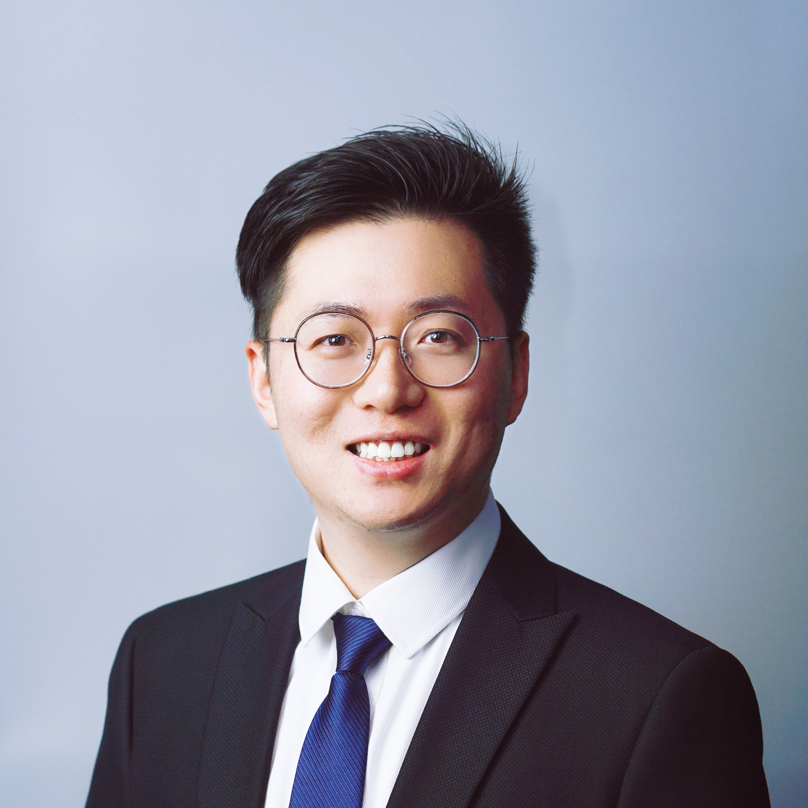
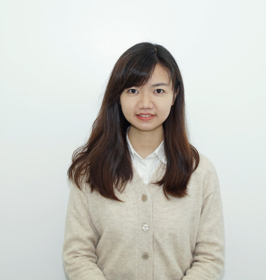
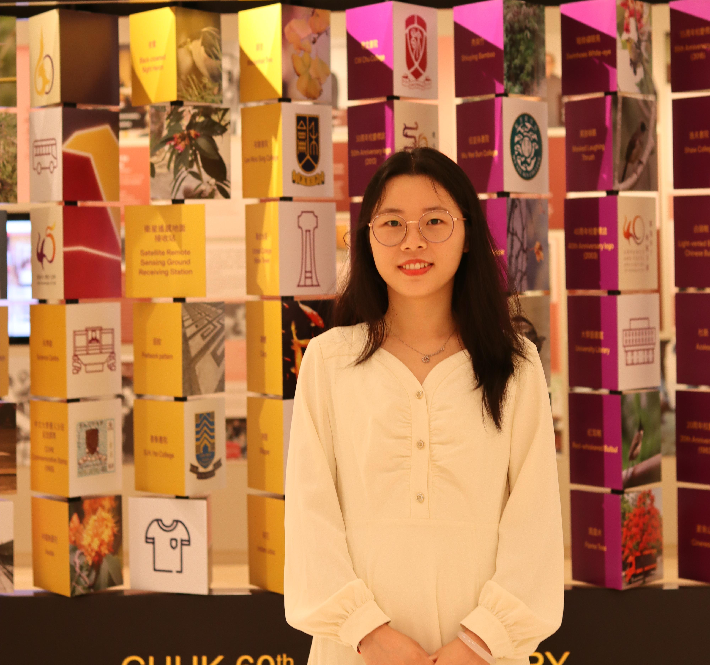

Princial Investigator Overview
-

Dr.Su Qi is a distinguished specialist in molecular biology and bioinformatics, with extensive experience in the gut microbiome and its relationship to human diseases. He received his PhD degree from the Chinese University of Hong Kong (CUHK), and he is currently a Research Assistant Professor at Faculty of Medicine, CUHK, Hong Kong.
He is committed to the molecular mechanism and treatment of digestive system diseases caused by intestinal flora and has published more than 50 SCI papers, 40 of which were published as the first or corresponding author in the Lancet Infectious Diseases (IF: 56.3), Cell Host & Microbe (IF: 30.3), Lancet Microbe (IF: 20.9), Gut (IF: 24.5), Nature Microbiology (IF: 20.5), Nature Biotechnology (IF: 33.1), Nature Communications (IF: 16.6), Gut Microbes (IF: 12.2), and Alimentary Pharmacology & Therapeutics (IF: 7.6), and other internationally renowned journals. He cited more than 1000 times. The relevant achievements have been highly concerned by domestic and foreign peers, and have won the special Gold and Silver Awards of the Geneva International Invention Exhibition, DDW Outstanding Paper Award, KDDW Outstanding Academic Award, Micro-Ecology Newcomer Award, first prize of China Gut Conference, KDDW Youth Research Institute Award, etc. A number of patented achievements such as microbial metagenomic multi-disease monitoring and probiotic formula SIM01 have been successfully translated into the market.
Research Directions
- AI-aided Gut Diseases Diagnosis and Predictions
- Horizontal Genetic Transfer in Fecal Microbiota Transplantation Therapies
- Prebiotics Investigation, Bioinformatics, and Molecular Biology
- Antimicrobial Peptides Discovery and Medical Applications
Our Team
-

LU Wenqi (PhD Candidate)
LU Wenqi earned her master’s degree from the School of Life Sciences at the Chinese University of Hong Kong. Currently, she is studying as a PhD student in the Department of Medicine & Therapeutics, at the Chinese University of Hong Kong.
-

Yun Wang (PhD Student)
WANG Yun obtained her master's degree in Internal Medicine from Nanjing Medical School. Currently, she is studying as a PhD student in the Department of Medicine & Therapeutics, at the Chinese University of Hong Kong.
-
AUGUSTUS CHEN Sizhe (PhD Student)
CHEN Sizhe received his bachelor's degree from the Dalian University of Technology, School of Bioengineering, and his master's degree from the Chinese University of Hong Kong, Faculty of Biomedical Sciences. He is currently a PhD student at the Chinese University of Hong Kong, Department of Medicine & Therapeutics.
Representative Publications
1. Qi Su#, Oscar Wong#, et al., Multikingdom and functional gut microbiota markers for autism spectrum disorder; Nature Microbiology, doi:10.1038/s41564-024-01739-1 (2024, Editor’s Highlights, FDA Breakthrough Device Designation)
2. Qi Su, et al., The gut microbiome associates with phenotypic manifestations of post-acute COVID-19 syndrome; Cell Host & Microbe 32(5):651-660 (2024)
3. Qi Su#, Qin Liu#, et al., Faecal microbiome-based machine learning for multi-class disease diagnosis; Nature Communications 13(1):6818 (2022)
4. Raphaela Iris Lau#, Qi Su#, et al., A synbiotic preparation (SIM01) for post-acute COVID-19 syndrome in Hong Kong (RECOVERY): a randomised, double-blind, placebo-controlled trial; Lancet Infectious Diseases 24(3):256-265 (2024)
5. Qin Liu#, Qi Su#, et al., Multi-kingdom gut microbiota analyses defines COVID-19 severity and post-acute COVID-19 syndrome; Nature Communications 13(1): 6806 (2022)
6. Qun Wang#, …, Qi Su#, et al., A genome catalogue of chinese indigenous chickens. Nature Biotechnology, AIP (2024)
7. Qi Su, et al., Faecal microbiota transplantation in IBS - moving closer or away from success? Alimentary Pharmacology & Therapeutics 58(9): 952-953 (2023)
8. Qi Su, et al., Gut microbiome signatures reflect different subtypes of irritable bowel syndrome; Gut Microbes 15(1): 2157697 (2023)
9. Qi Su#, Qin Liu#, et al., Antibiotics and probiotics impact gut antimicrobial resistance gene reservoir in COVID-19 patients; Gut Microbes 14(1): 2128603 (2022)
10. Sizhe Chen, Qi Su*. Data-empowered Approach for Antimicrobial Peptide Identification: Insights in Post-GPT Era. iMetaOmics, In press (2024)
Awards
1. FDA Breakthrough Device Designation for the multikingdom microbiome-based test of autism (2024)
2. International Federation of Inventions’ associations Best Invention Medal, A synbiotic preparation for post COVID conditions. Silicon Valley International Invention Festival (2024)
3. Gold Medal, A synbiotic preparation for post COVID conditions. Silicon Valley International Invention Festival (2024)
4. Gold Medal, Precision Oral Microbiome Formula SIM01: Alleviating Multiple Symptoms of Long-COVID, 49th International Exhibition of Inventions Geneva (2024)
5. Silver Medal, Stool test for early risk prediction of autism spectrum disorder, 49th International Exhibition of Inventions Geneva (2024)
6. Distinguished Abstract, DDW (2024)
7. Gold Medal. AI-guided and personalised fecal microbiota transplantation (FMT) treatment for human diseases. 3rd Aisa Exhibition of Innovations and Inventions Hong Kong (2023)
8. Excellent Presentation Award. IDIC Theme Based Training Seminar. Hospital Authority (2023)
9. Most downloaded paper in Alimentary Pharmacology & Therapeutics (Oct 2023)
10. Excellent Academic Award, Shanghai Youth Forum-Virology (2023)
11. Micro Ecological Emerging Award, Lion Lake International Microbiome Conference (2023)
12. Most downloaded paper in Alimentary Pharmacology & Therapeutics (Sep 2023)
13. E-Academic Award, KDDW (2023)
14. FIRST Prize of China Gut (2023)
15. Gold Medal with Congratulations of the Jury, One Stool Test for Early Detection of Multi-Diseases, 48th International Exhibition of Inventions Geneva (2023)
16. Silver Medal, Go with Your Gut to Predict Post-Acute COVID-19 Syndrome, 48th International Exhibition of Inventions Geneva (2023)
17. Young Investigator Award, KDDW (2022)
18. Shandong Postgraduate Research Innovation Award, China (2020)
19. National Graduate Award, China (2019)
Grants
1. Deciphering the mechanism of Akkermansia Muciniphila in alleviating diarrhea-predominated irritable bowel syndrome via inosine-PPARγ-AQP1axis. UGC-GRF, 14104124, 2024 (PI, HK$1,431,914)
2. Multi-kingdom microbial biomarkers for autism spectrum disorder. CUHK Direct Grant for Research, 2024.009, 2024 (PI, HK$150,000)
3. Development and Validation of Fecal Microbiome-based Biomarkers for Autism Spectrum Disorder Diagnosis. ITC, InnoHK, 2024 (Project Leader, HK$6,000,000)
4. Optimization and evaluation of chicken vaccination against Newcastle Disease Virus. SDAU-Enterprise JRF, 2019 (PI, RMB300,000)
5. Semen-derived exosomes mediate immune escape and transmission of reticuloendotheliosis virus. NSFC, 31972663, 2019 (Co-I, RMB570,000)
6. Molecular mechanism underlying immunosuppression induced by co-infected ALV and REV. National Key Research and Development Program of China, 2018YFD0500106, 2019 (Project Leader, RMB 400,000)
News and Contacts
Email: qisu@cuhk.edu.hk